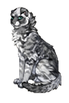
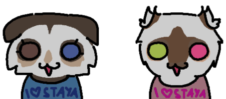
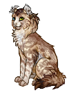
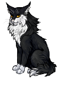
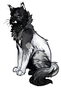

ШАЛОВЛИВЕНЬКАЯ ШАЛУНИШКОО ШАЛОСТЬ ШАЛОВЛИВОСТЬ короче все от слова шалить

Скалозубочка
Скалозубочка – это высокий мраморно-серый котенок с вечно потрепанным хвостом, вислыми ушами и тяжелым взглядом.
Скалозубочка отличается своей серьезностью: даже будучи маленьким котенком, она выглядит так, как будто прожила уже три жизни, и иногда это пугает ее родителей.
Скалозубочка родилась в большой семье. Нет, не так. Скалозубочка родилась в ОЧЕНЬ большой семье, состоящей из родителей, сиблингов, дядей, тетей и прочей родни. От такого количества котов у нее уже болит голова. Однако особый интерес она питает к своему дяде Улыбашке и его жене Чудо.
Чудо и Улыбашка


Шелестинка
няшичка мицу

Сажик
сигмамаркиз

Одержимолап
настоящее имя демоненок проста его настигла участь адекватнолапа..